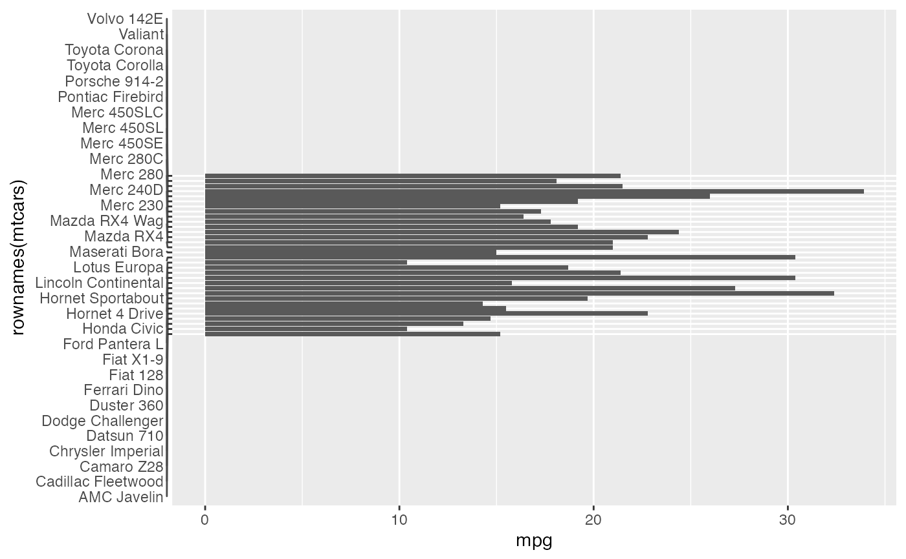
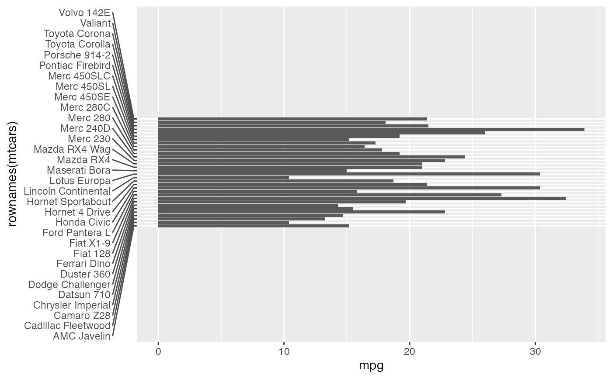
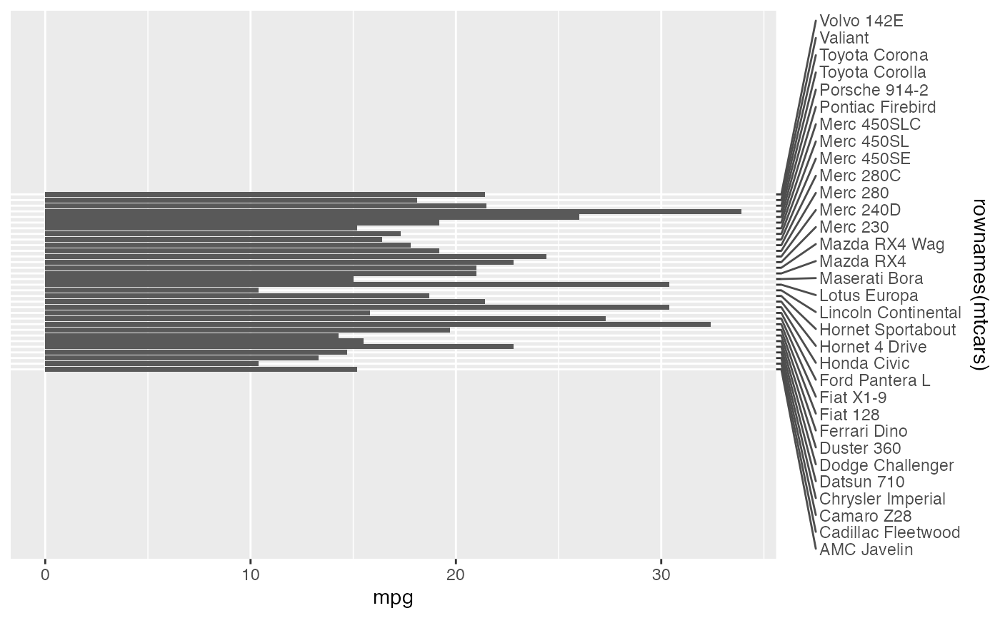
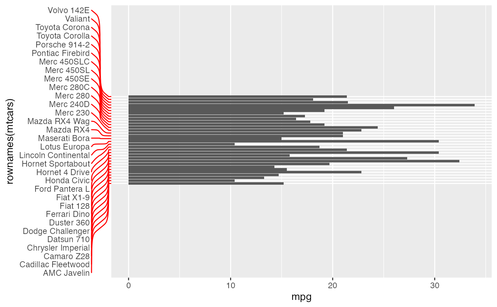

This text element is a replacement for element_text
that repulses labels.
Usage
element_text_repel(
family = NULL,
face = NULL,
colour = NULL,
size = NULL,
hjust = NULL,
vjust = NULL,
angle = NULL,
lineheight = NULL,
color = NULL,
margin = NULL,
box.padding = NULL,
force = NULL,
force_pull = NULL,
max.time = NULL,
max.iter = NULL,
max.overlaps = NULL,
min.segment.length = NULL,
segment.colour = NULL,
segment.linetype = NULL,
segment.size = NULL,
segment.curvature = NULL,
segment.angle = NULL,
segment.ncp = NULL,
segment.shape = NULL,
segment.square = NULL,
segment.squareShape = NULL,
segment.inflect = NULL,
arrow = NULL,
seed = NA,
position = c("bottom", "top", "left", "right"),
inherit.blank = FALSE
)Arguments
- family
The typeface to use. The validity of this value will depend on the graphics device being used for rendering the plot. See the systemfonts vignette for guidance on the best way to access fonts installed on your computer. The values
"sans","serif", and"mono"should always be valid and will select the default typeface for the respective styles. However, what is considered default is dependant on the graphics device and the operating system.- face
Font face ("plain", "italic", "bold", "bold.italic")
- colour, color
Line/border colour. Color is an alias for colour.
alpha()can be used to set the transparency of the colour.- size
Font size in points.
- hjust
Horizontal justification (in \([0, 1]\))
- vjust
Vertical justification (in \([0, 1]\))
- angle
Angle (in \([0, 360]\))
- lineheight
Line height
- margin
Margins around the text. See
margin()for more details. When creating a theme, the margins should be placed on the side of the text facing towards the center of the plot.- box.padding
Amount of padding around bounding box, as unit or number. Defaults to 0.25. (Default unit is lines, but other units can be specified by passing
unit(x, "units")).- force
Force of repulsion between overlapping text labels. Defaults to 1.
- force_pull
Force of attraction between a text label and its corresponding data point. Defaults to 1.
- max.time
Maximum number of seconds to try to resolve overlaps. Defaults to 0.5.
- max.iter
Maximum number of iterations to try to resolve overlaps. Defaults to 10000.
- max.overlaps
Exclude text labels when they overlap too many other things. For each text label, we count how many other text labels or other data points it overlaps, and exclude the text label if it has too many overlaps. Defaults to 10.
- min.segment.length
Skip drawing segments shorter than this, as unit or number. Defaults to 0.5. (Default unit is lines, but other units can be specified by passing
unit(x, "units")).- segment.colour, segment.linetype, segment.size
Graphical parameters for the line connecting the text to points of origin.
- segment.curvature, segment.angle, segment.ncp, segment.shape, segment.square, segment.squareShape, segment.inflect
Settings for curving the connecting line. See
curveGrobfor descriptions of these parameters.- arrow
Arrow specification, as created by
grid::arrow()- seed
Random seed passed to
set.seed. Defaults toNA, which means thatset.seedwill not be called.- position
One of
"top","right","bottom","left"setting where the text labels should be relative to points of origin.- inherit.blank
Should this element inherit the existence of an
element_blankamong its parents? IfTRUEthe existence of a blank element among its parents will cause this element to be blank as well. IfFALSEany blank parent element will be ignored when calculating final element state.
Examples
# A plot with a crowded y-axis
p <- ggplot(mtcars, aes(mpg, rownames(mtcars))) +
geom_col() +
coord_cartesian(ylim = c(-32, 64)) +
theme(axis.text.y = element_text_repel())
# By default there isn't enough space to draw distinctive lines
p

# The available space can be increased by setting the margin
p + theme(axis.text.y.left = element_text_repel(margin = margin(r = 20)))

# For secondary axis positions at the top and right, the `position` argument
# should be set accordingly
p + scale_y_discrete(position = "right") +
theme(axis.text.y.right = element_text_repel(
margin = margin(l = 20),
position = "right"
))

# Using segment settings and matching tick colour
p + theme(
axis.text.y.left = element_text_repel(
margin = margin(r = 20),
segment.curvature = -0.1,
segment.inflect = TRUE,
segment.colour = "red"
),
axis.ticks.y.left = element_line(colour = "red")
)
